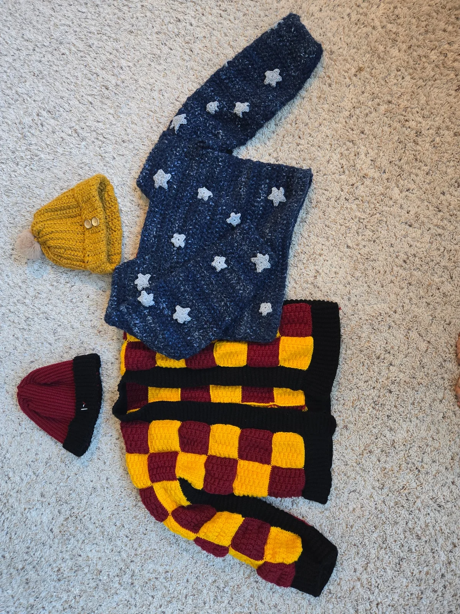

Craft · Pattern design
Crochet, in three dimensions
Crochet feels like 3D printing by hand: a sequence of instructions becomes a shape, and small changes to that sequence change the result.
- My role
- Maker & pattern designer
- Medium
- Yarn & crochet
- Work
- Characters, wearables & patterns
- Format
- Physical objects & video

Instructions you can hold
A crochet pattern is a structure I can follow, test, and change. Stitch counts control the shape; yarn and tension change its feel. I like the connection between something that reads like a set of instructions and something that ends up soft and three-dimensional.
From materials to a character
My process video follows a crocheted elf through sketching, yarn selection, stitching, assembly, and the finished piece. It also shows a wider collection of characters and wearables.
My collection includes pieces made from other designers’ patterns alongside my original pattern work. The video credits the elf pattern’s designer.
Beyond a single object
I also design and sell original crochet patterns. Writing a pattern means turning the way I made something into instructions another person can follow.
